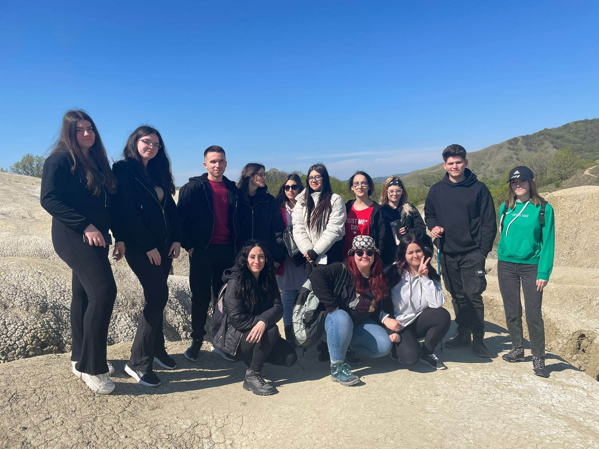

Aplicație practică de o zi · 29 aprilie 2023
O zi de teren în Geoparcul Internațional UNESCO Ținutul Buzăului, între peisaje subcarpatice, Vulcanii Noroioși și platoul de sare de la Meledic.
Traseul zilei

Tema zilei
Patrimoniu natural, peisaje subcarpatice și valorificare turistică.
Observații
Vulcani noroioși, badlands, sare, alunecări și dinamica reliefului.
Competențe
Interpretarea peisajului, corelarea factorilor naturali și antropici.